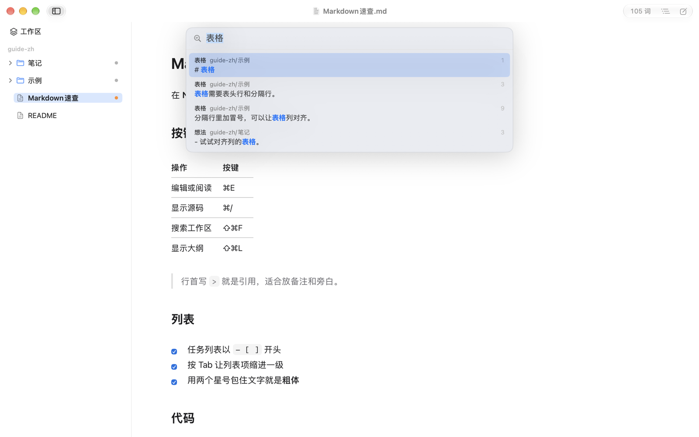

開源的 Mac Markdown 閱讀編輯器
打開 .md，看到的就是成品。
打開即渲染，按 ⌘E 就地修改，存檔只寫回你改過的地方。
開源的 Mac Markdown 閱讀編輯器
打開即渲染，按 ⌘E 就地修改，存檔只寫回你改過的地方。

Nib 是免費開源的 Mac Markdown 應用程式。打開檔案時直接顯示排好版的文件，而不是原始碼。按 ⌘E 就地編輯，只有游標所在那一行會露出 Markdown 語法，手感和 Typora 一樣。存檔只寫回你的修改，檔案在 git 裡保持乾淨。其他程式改寫檔案時會自動重新載入，所有文件都收進同一個視窗的標籤頁，還能搜尋整個資料夾。原生應用程式，約 8 MB，需要 macOS 15 或更新版本。
讀的時候，它就是一頁排好的文件。

改一個字，git diff 裡就只有這一個字。
程式設計 Agent 的計畫、腳本產生的報告、建置工具輸出的文件。你多半在讀，偶爾改一行。
終端機、腳本或 Agent 改寫了檔案，開著的頁面會自動更新。
從 Finder、終端機或連結打開的檔案，都收進同一個視窗。⌘1 到 ⌘9 切換。
改過的檔案標橘點，新檔案標綠點，commit 後隨即消失。
⇧⌘O 依檔名打開，⇧⌘F 搜尋所有檔案並跳到那一行。2,500 個檔案不到 0.25 秒。
關掉最後一個視窗，它會離開 Dock 但持續待命。下一個檔案約 0.15 秒打開。
一段時間沒看的標籤頁會釋放記憶體，切回來時仍停在原處。

Typora 使用者習慣的功能，這裡都有。
存進檔案旁的 name.assets/，以相對路徑插入。支援 typora-copy-images-to。
瀏覽器、Google Docs、飛書的格式化文字，貼上即轉成乾淨的 Markdown。
支援 CommonMark 與 GitHub Flavored Markdown，Tab 調整清單層級。
⇧⌘L 開大綱，F8 只亮目前段落，F9 讓目前這一行保持在中間。
PDF，或內嵌圖片的單一 HTML 檔，直接傳給別人。
淺色、深色、暖紙，也能用 Typora 主題。字型、間距、快速鍵都能自己調。
Typora 定義了就地編輯，MarkEdit 是快速的原生原始碼編輯器，Obsidian 是一整套筆記系統。Nib 用來讀 Markdown，需要時順手改。
| Nib | Typora | MarkEdit | Obsidian | |
|---|---|---|---|---|
| 打開檔案時 | 排好版的頁面 | 即時預覽編輯器 | 高亮的原始碼 | 即時預覽編輯器 |
| 檔案位置 | 任意位置 | 任意位置 | 任意位置 | 限 vault 資料夾內 |
| 側邊欄 git 狀態 | ✓ | — | — | 需裝外掛 |
| 介面 | 原生外殼，CodeMirror 核心 | Electron | 原生外殼，CodeMirror 核心 | Electron |
| 平台 | Mac | Mac · Windows · Linux | Mac | Mac · Windows · Linux · iOS · Android |
| 價格 · 授權 | 免費 · GPL-3.0 | 付費 · 閉源 | 免費 · MIT | 免費 · 閉源 |
Nib 未經 Apple 公證，第一次打開時允許一次即可。
打開 Nib.dmg，把 Nib 拖進「應用程式」資料夾。
先打開一次並按「完成」，再到「系統設定 › 隱私權與安全性」按「強制打開」。
在 Finder 選取一個 .md，按 ⌘I，在「打開檔案的應用程式」選 Nib，再按「全部更改」。
需要 macOS 15 或更新版本。通用應用程式，支援 Apple 晶片與 Intel。
都能在設定裡更改。
| 編輯 / 閱讀 | ⌘E |
| 原始碼 | ⌘/ |
| 快速打開 | ⇧⌘O |
| 在工作區中搜尋 | ⇧⌘F |
| 側邊欄 | ⌃⌘S |
| 大綱 | ⇧⌘L |
| 專注 / 打字機 | F8F9 |
| 切換標籤頁 | ⌘1–⌘9 |
| 重新打開已關閉的標籤頁 | ⇧⌘T |
大家最常問的幾件事。
Nib 的就地編輯和 Typora 一樣，只有游標所在那一行露出語法。它免費、以 GPL-3.0 開源，是原生 Mac 應用程式。和 Typora 不同的是，它打開檔案時先進入閱讀檢視，按 ⌘E 才編輯。它也能使用 Typora 主題。
把 Nib 設為 .md 檔的預設應用程式，然後在終端機點檔案路徑，或從 Finder 打開。檔案會以排好的版面，開在既有視窗的標籤頁裡；Agent 改寫檔案時自動重新載入。把專案資料夾加進側邊欄，還能看到上次 commit 後哪些檔案改過。
只改你編輯的地方。存檔時寫回你的修改，其餘逐位元組保持原樣，包括換行符號和空行。Nib 不寫中繼資料，也不留隱藏檔案。
可以。把主題的 CSS 檔和同名資料夾放進 ~/Library/Application Support/Nib/themes，再到設定裡選。閱讀檢視完整套用主題，編輯時借用它的顏色和字型。Nib 相容這種格式，但不附帶 Typora 的主題。
免費，並以 GPL-3.0 授權開源。不用帳號，也沒有付費項目。
Nib 沒有經過 Apple 公證。先打開一次並關掉提示，再到「系統設定 › 隱私權與安全性」按「強制打開」。只需操作一次。
目前還不支援。標記為 math 或 mermaid 的程式碼區塊會以程式碼顯示。